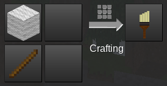
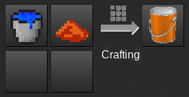
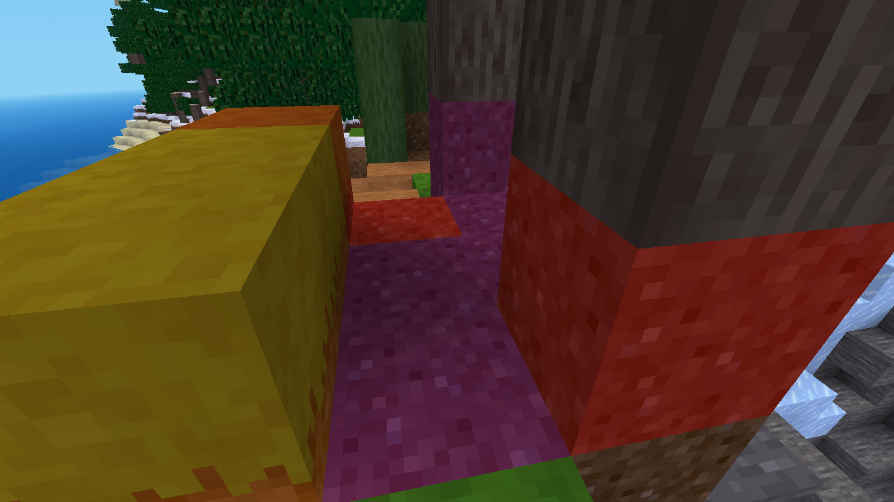
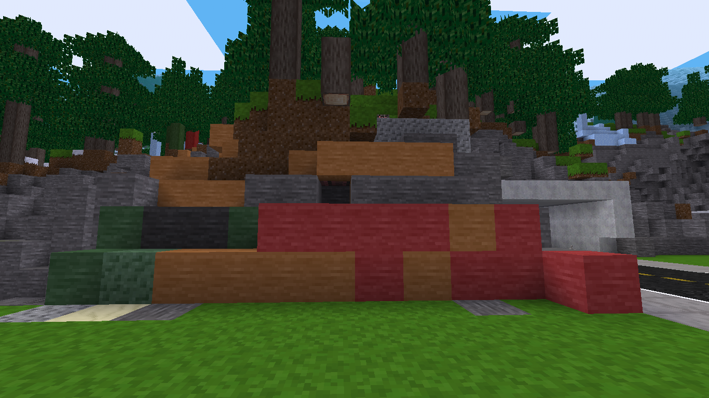
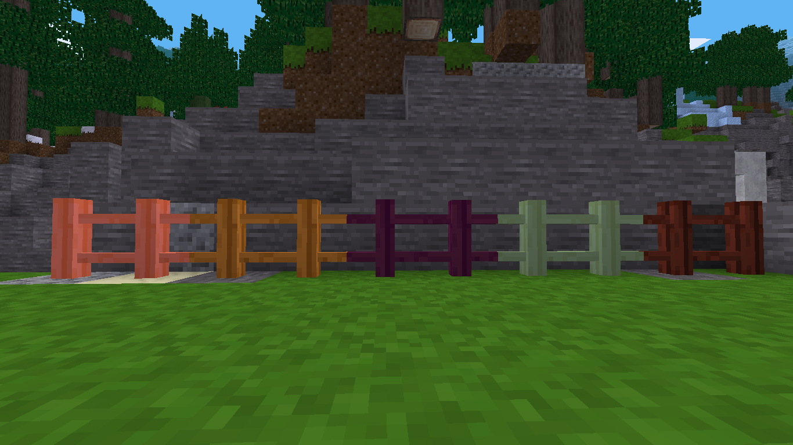
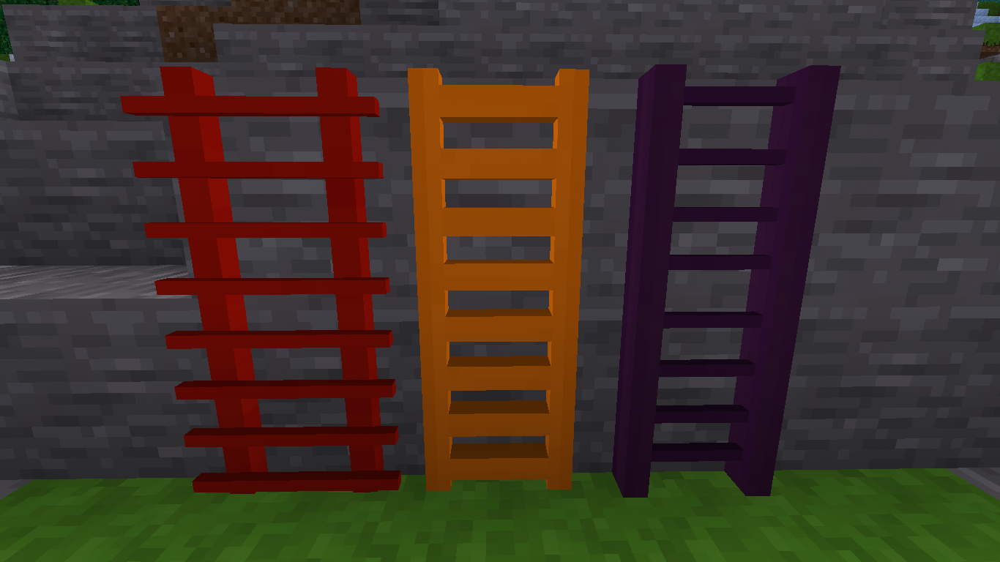

You will need to craft a brush and paint. You can use any color of dye.


Then you need to set the paint on the ground and click it with your paint brush. You can paint 3 times and then you will need to click the paint can again. Each can of paint has 100 uses.



It also is supported by mods like myladders, myfences,mymeshnodes, mymillwork, myletters, mynumbers, mywhiteblock and more!

Want to paint many default things? Check out mypaint extras on ContentDB. There is also mypaint wood if you just want to paint wood blocks.
If you have a mod that you would like to paint then here is a sample of the code you need.
- Luanti Forum Link - My Paint
- Github Link - Veiw Code
- Direct Download - mypaint.zip
- ContentDB - My Paint